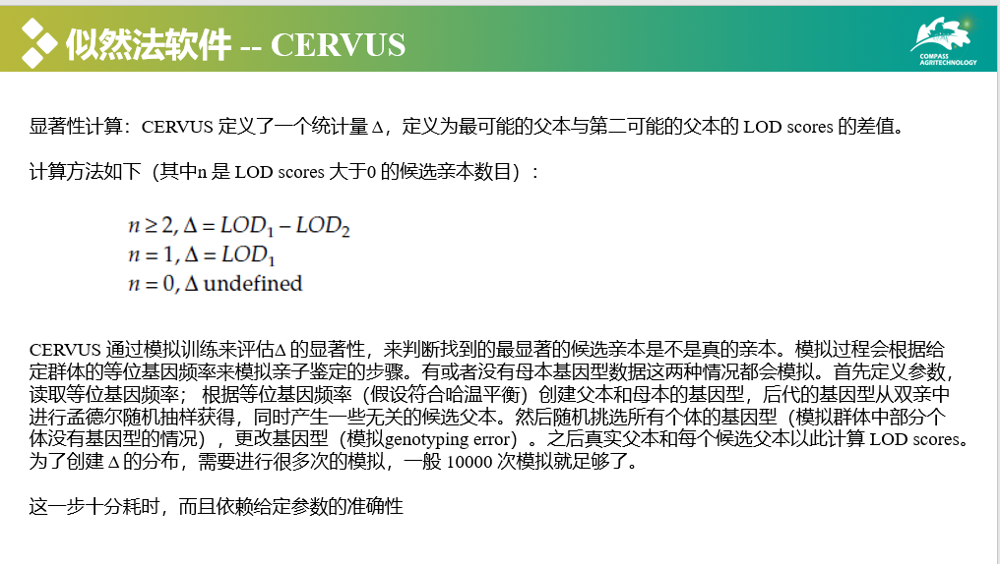
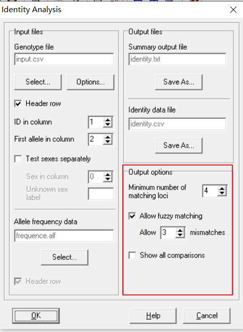

<!DOCTYPE html>


<html lang="zh-CN">


<head>
  <meta name="baidu-site-verification" content="codeva-NSg7ynviLa" />
  <meta charset="utf-8" />
    
  <meta name="viewport" content="width=device-width, initial-scale=1, maximum-scale=1" />
  <title>
    cervus软件 |  
  </title>
  <meta name="generator" content="hexo-theme-ayer">
  
  <link rel="shortcut icon" href="/images/mojie.jpg" />
  
  
<link rel="stylesheet" href="/dist/main.css">

  <link rel="stylesheet" href="https://cdn.jsdelivr.net/gh/Shen-Yu/cdn/css/remixicon.min.css">
  
<link rel="stylesheet" href="/css/custom.css">

  
  <script src="https://cdn.jsdelivr.net/npm/pace-js@1.0.2/pace.min.js"></script>
  
  

  

<link rel="alternate" href="/atom.xml" title="null" type="application/atom+xml">
</head>

</html>

<body>
  <div id="app">
    
      
    <main class="content on">
      <section class="outer">
  <article
  id="post-cervus软件"
  class="article article-type-post"
  itemscope
  itemprop="blogPost"
  data-scroll-reveal
>
  <div class="article-inner">
    
    <header class="article-header">
       
<h1 class="article-title sea-center" style="border-left:0" itemprop="name">
  cervus软件
</h1>
 

    </header>
     
    <div class="article-meta">
      <a href="/posts/c13fbdfa/" class="article-date">
  <time datetime="2023-05-10T03:39:32.000Z" itemprop="datePublished">2023-05-10</time>
</a> 
  <div class="article-category">
    <a class="article-category-link" href="/categories/%E8%BD%AF%E4%BB%B6%E5%AD%A6%E4%B9%A0/">软件学习</a> / <a class="article-category-link" href="/categories/%E8%BD%AF%E4%BB%B6%E5%AD%A6%E4%B9%A0/cervus/">cervus</a>
  </div>
  
<div class="word_count">
    <span class="post-time">
        <span class="post-meta-item-icon">
            <i class="ri-quill-pen-line"></i>
            <span class="post-meta-item-text"> 字数统计:</span>
            <span class="post-count">1.5k</span>
        </span>
    </span>

    <span class="post-time">
        &nbsp; | &nbsp;
        <span class="post-meta-item-icon">
            <i class="ri-book-open-line"></i>
            <span class="post-meta-item-text"> 阅读时长≈</span>
            <span class="post-count">5 分钟</span>
        </span>
    </span>
</div>
 
    </div>
      
    <div class="tocbot"></div>


  
    <div class="article-entry" itemprop="articleBody">
       
  <link rel="stylesheet" type="text/css" href="https://cdn.jsdelivr.net/hint.css/2.4.1/hint.min.css"><p>cervus 是经典的亲子鉴定软件。</p>
<span id="more"></span>
<h1>cervus 原理</h1>
<p></p>
<p></p>
<p></p>
<p></p>
<h1>下载 cervus</h1>
<p>去官网下载软件（见参考文献的第一条链接），我下载的是 3.0.7 版本</p>
<h1>准备基因型文件</h1>
<p>基因型文件可以由 plink 文件生成，第一列是个体号，从第二列起为每个位点的基因型，一个基因型占2列（SSR 使用片段大小，SNP 可以使用碱基，缺失标记为 0），含有标题（两列基因型分别添加后缀 “a”, “b”）。</p>
<p>举例如下</p>
<p></p>
<h1>计算等位基因频率</h1>
<p>点击 <code>Analysis</code> ，然后点击 <code>Allele Frequency Analysis</code></p>
<p></p>
<p>在弹出的窗口设置如下，其中左下部分含义为</p>
<ul>
<li><code>Header row</code> ： 是否有标题</li>
<li><code>Read locus names</code> ： 是否读取位点名称</li>
<li><code>ID in column</code> ： 样本号在第几列</li>
<li><code>First allele in column</code> ： 第一个位点的基因型在第几列</li>
<li><code>Number of loci</code> : 位点总数</li>
</ul>
<p>右下部分默认不动（含义为做哈温伯格平衡测试，最小期望频率为5，使用叶氏连续性修正，使用Bonferroni校正，估计无效等位基因频率）。</p>
<p></p>
<p>运行结束了我们得到了两个结果文件</p>
<p><code>frequence.alf</code> 就是等位基因型频率结果文件</p>
<p></p>
<p><code>frequence.txt</code> 文件各列内容如下</p>
<ul>
<li><code>Locus</code> ： 位点名称</li>
<li><code>k</code> ： 等位基因型数目</li>
<li><code>N</code> ： 该位点的样本数目（应该是剔除缺失后的）</li>
<li><code>HObs</code> : 该位点的观测杂合度</li>
<li><code>HExp</code> : 该位点的期望杂合度</li>
<li><code>PIC</code> ： 该位点的多态信息含量 (Polymorphic information content)</li>
</ul>
<p>后续列为（<strong>注意</strong>，这里的结果是<strong>非排除概率</strong>，排除概率等于 1- 该列的值） 。</p>
<p>后面三列应该对应着三种情况，双亲的基因型均未知鉴定一个候选亲本（1P）， 已知一个亲本基因型鉴定另一个候选亲本（2P），双亲的基因型均未知鉴定一对候选亲本（PP）。</p>
<blockquote>
<p>NE-1P: Average non-exclusion probability for one candidate parent.</p>
<p>NE-2P: Average non-exclusion probability for one candidate parent given the genotype of a known parent of the opposite sex.</p>
<p>NE-PP: Average non-exclusion probability for a candidate parent pair.</p>
<p>NE-I: Average non-exclusion probability for identity of two unrelated individuals.</p>
<p>NE-SI: Average non-exclusion probability for identity of two siblings.</p>
<p>HW: 哈温伯格平衡NS = not significant无显著性, * = significant at the 5% level显著性水平5%, ** = significant at the 1% level显著性水平1%, *** = significant at the 0.1% level显著性水平0.1%, ND = not done没有做</p>
<p>F(Null): Estimated null allele frequency估计无效等位基因频率</p>
</blockquote>
<p></p>
<p>之后的统计内容为</p>
<ul>
<li><code>Number of individuals</code>: 个体数量</li>
<li><code>Number of loci</code> : 位点数量</li>
<li><code>Mean number of alleles per locus</code> : 所有位点平均等位基因数量</li>
<li><code>Mean proportion of loci typed</code> : 所有位点的平均检出率</li>
<li><code>Mean expected heterozygosity</code> : 所有位点的平均期望杂合度</li>
<li><code>Mean polymorphic information content (PIC)</code>: 所有位点的平均多态信息含量</li>
</ul>
<p>之后是累积<strong>非排除概率</strong>的统计。</p>
<p></p>
<h1>检测重复样本</h1>
<p>亲子鉴定前最好做一下个体识别，或者说重复样本检测，看看有没有基因型一样的个体。</p>
<p>点击 <code>Analysis</code> ，然后点击 <code>Identity Analysis</code> 。</p>
<p></p>
<p>设置如下，其它设置上面均提过，新增加的选项就是输出选项</p>
<ul>
<li><code>Minimum number of matching loci</code> ：这应该是说输出的重复样本之间最少应该匹配上多少个体位点</li>
<li><code>Allow fuzzy matching</code> : 允许模糊匹配，就是说允许两个重复存在不一致位点</li>
<li><code>Allow 3 mismatches</code> ：允许重复样本之间最多存在几个不一致位点</li>
</ul>
<p></p>
<p>输出文件 <code>identity.csv</code> 中含有所有重复样本的信息</p>
<p></p>
<h1>模拟亲缘关系推断</h1>
<p>通过模拟训练可以获得亲子关系统计指标  置信区间为80%和95%的临界值。</p>
<p>点击 <code>Analysis</code> ，然后点击 <code>Simulation of Parentage Analysis</code> 。</p>
<p></p>
<p>这里有四种亲子鉴定分析类型类型：maternity analysis, paternity analysis, parent pair analysis where the sexes of candidate parents are known and parent pair analysis where the sexes of candidate parents are unknown 。</p>
<p>可以简单地理解为单亲鉴定和双亲鉴定，下面以 <code>parent pair (Sexes Known)</code> 为例</p>
<p>其中：</p>
<ul>
<li><code>Offspring</code>:  后代数目，默认就是 10000</li>
<li><code>Candidate mothers</code> ： 候选母本数目（包括没有基因型的样本）(父本同理)</li>
<li><code>Prop. sampled</code> : 候选母本采样比例</li>
<li><code>Prop. loci typed</code> ：位点的分型率</li>
<li><code>Prop. loci mistyped</code> ：位点的错误分型率</li>
</ul>
<p></p>
<p>这里有两个输出文件: <code>sim_mother.sim</code> 中包含了所有的参数，<code>sim_mother.txt</code> 是模拟结果。</p>
<h1>亲子鉴定</h1>
<p>首先将后代的个体号放在一个文件中(offspring.txt) ，如果已知亲本性别则创建一个候选父本的个体号文件(father.txt) 和 候选母本的个体号文件（mother.txt），如果亲本性别未知则将所有候选亲本放在一个文件夹中。</p>
<p>下面以亲本性别已知为例，点击 <code>Analysis</code>  再点击 <code>Parentage Analysis</code> , <code>Parent Pair (Sexes Known)</code></p>
<p>填写参数如下，每一步之后都点击 <code>next</code> 进入下一步，注意选择模拟结果文件时要选择相同的分析结果（比如这里是双亲有性别信息，这里的模拟结果也要用双亲有性别信息）</p>
<p></p>
<p></p>
<p></p>
<p></p>
<p></p>
<p>输出结果中 <code>assign_out.txt</code> 是汇总文件， <code>assign_out.csv</code> 是具体结果，其结构如下，首先是最可能的母本（主要关注其似然比， 还有显著性水平 ），然后是最可能的父本，然后是这个 trios 的似然比结果。</p>
<p></p>
<h1>讨论</h1>
<p>cervus 是一款经典的亲子鉴定软件，使用起来还算是比较方便简单，但是我认为它有几点缺点：</p>
<ol>
<li>图形化界面，只能在 windows 环境中运行</li>
<li>必须将个体分为后代和候选亲本，没有考虑世代重叠的情况</li>
<li>当真实亲本不在候选亲本中，会错误地推出一个错误的候选亲本</li>
<li>无法有效区分亲子关系和全同胞关系</li>
</ol>
<h1>参考文献</h1>
<ol>
<li><a target="_blank" rel="noopener" href="http://www.fieldgenetics.com/pages/aboutCervus_Overview.jsp">http://www.fieldgenetics.com/pages/aboutCervus_Overview.jsp</a></li>
<li><a target="_blank" rel="noopener" href="https://zhuanlan.zhihu.com/p/378780428">https://zhuanlan.zhihu.com/p/378780428</a></li>
<li><a target="_blank" rel="noopener" href="https://wenku.baidu.com/view/101e04e0aff8941ea76e58fafab069dc50224763.html?_wkts_=1682647370039">https://wenku.baidu.com/view/101e04e0aff8941ea76e58fafab069dc50224763.html?_wkts_=1682647370039</a></li>
</ol>
 
      <!-- reward -->
      
    </div>
    

    <!-- copyright -->
    
    <div class="declare">
      <ul class="post-copyright">
        <li>
          <i class="ri-copyright-line"></i>
          <strong>版权声明： </strong>
          
          本博客所有文章除特别声明外，著作权归作者所有。转载请注明出处！
          
        </li>
      </ul>
    </div>
    
    <footer class="article-footer">
       
  <ul class="article-tag-list" itemprop="keywords"><li class="article-tag-list-item"><a class="article-tag-list-link" href="/tags/cervus/" rel="tag">cervus</a></li><li class="article-tag-list-item"><a class="article-tag-list-link" href="/tags/%E8%BD%AF%E4%BB%B6%E5%AD%A6%E4%B9%A0/" rel="tag">软件学习</a></li></ul>

    </footer>
  </div>

   
  <nav class="article-nav">
    
      <a href="/posts/e2974541/" class="article-nav-link">
        <strong class="article-nav-caption">上一篇</strong>
        <div class="article-nav-title">
          
            STR亲权鉴定指标
          
        </div>
      </a>
    
    
      <a href="/posts/2aec3b6c/" class="article-nav-link">
        <strong class="article-nav-caption">下一篇</strong>
        <div class="article-nav-title">python包-glob</div>
      </a>
    
  </nav>

   
<!-- valine评论 -->
<div id="vcomments-box">
  <div id="vcomments"></div>
</div>
<script src="//cdn1.lncld.net/static/js/3.0.4/av-min.js"></script>
<script src="https://cdn.jsdelivr.net/npm/valine@1.4.14/dist/Valine.min.js"></script>
<script>
  new Valine({
    el: "#vcomments",
    app_id: "yHN3kf7fHt5wvleM2DVoHLdY-gzGzoHsz",
    app_key: "RPIwmdftljIzOtAULwc7JCAp",
    path: window.location.pathname,
    avatar: "monsterid",
    placeholder: "靓仔，看完留个评论再走哇！\n只需要填入昵称和邮箱就可以了",
    recordIP: true,
  });
  const infoEle = document.querySelector("#vcomments .info");
  if (infoEle && infoEle.childNodes && infoEle.childNodes.length > 0) {
    infoEle.childNodes.forEach(function (item) {
      item.parentNode.removeChild(item);
    });
  }
</script>
<style>
  #vcomments-box {
    padding: 5px 30px;
  }

  @media screen and (max-width: 800px) {
    #vcomments-box {
      padding: 5px 0px;
    }
  }

  #vcomments-box #vcomments {
    background-color: #fff;
  }

  .v .vlist .vcard .vh {
    padding-right: 20px;
  }

  .v .vlist .vcard {
    padding-left: 10px;
  }
</style>

 
   
     
</article>

</section>
      <footer class="footer">
  <div class="outer">
    <ul>
      <li>
        Copyrights &copy;
        2019-2023
        <i class="ri-heart-fill heart_icon"></i> Vincere Zhou
      </li>
    </ul>
    <ul>
      <li>
        
        
        <span>
  <span><i class="ri-user-3-fill"></i>访问人数:<span id="busuanzi_value_site_uv"></span></s>
  <span class="division">|</span>
  <span><i class="ri-eye-fill"></i>浏览次数:<span id="busuanzi_value_page_pv"></span></span>
</span>
        
      </li>
    </ul>
    <ul>
      
    </ul>
    <ul>
      
    </ul>
    <ul>
      <li>
        <!-- cnzz统计 -->
        
      </li>
    </ul>

    <!-- 与只只在一起天数 -->
	<ul>
		<li><span id="lovetime_span"></span></li>
	</ul>
    <script type="text/javascript">			
        function show_runtime() {
            window.setTimeout("show_runtime()", 1000);
            X = new Date("03/04/2021 22:11:00");
            Y = new Date();
            T = (Y.getTime() - X.getTime());
            M = 24 * 60 * 60 * 1000;
            a = T / M;
            A = Math.floor(a);
            b = (a - A) * 24;
            B = Math.floor(b);
            c = (b - B) * 60;
            C = Math.floor((b - B) * 60);
            D = Math.floor((c - C) * 60);
            lovetime_span.innerHTML = "只只和男朋友在一起了 " + A + "天" + B + "小时" + C + "分" + D + "秒"
        }
        show_runtime();
    </script>

  </div>
</footer>
      <div class="float_btns">
        <div class="totop" id="totop">
  <i class="ri-arrow-up-line"></i>
</div>

      </div>
    </main>
    <aside class="sidebar on">
      <button class="navbar-toggle"></button>
<nav class="navbar">
  
  <div class="logo">
    <a href="/"></a>
  </div>
  
  <ul class="nav nav-main">
    
    <li class="nav-item">
      <a class="nav-item-link" href="/">主页</a>
    </li>
    
    <li class="nav-item">
      <a class="nav-item-link" href="/archives">归档</a>
    </li>
    
    <li class="nav-item">
      <a class="nav-item-link" href="/categories">分类</a>
    </li>
    
    <li class="nav-item">
      <a class="nav-item-link" href="/tags">标签</a>
    </li>
    
    <li class="nav-item">
      <a class="nav-item-link" href="/friends">友链</a>
    </li>
    
    <li class="nav-item">
      <a class="nav-item-link" href="/about">关于</a>
    </li>
    
  </ul>
</nav>
<nav class="navbar navbar-bottom">
  <ul class="nav">
    <li class="nav-item">
      
      <a class="nav-item-link nav-item-search"  title="搜索">
        <i class="ri-search-line"></i>
      </a>
      
      
      <a class="nav-item-link" target="_blank" href="/atom.xml" title="RSS Feed">
        <i class="ri-rss-line"></i>
      </a>
      
    </li>
  </ul>
</nav>
<div class="search-form-wrap">
  <div class="local-search local-search-plugin">
  <input type="search" id="local-search-input" class="local-search-input" placeholder="Search...">
  <div id="local-search-result" class="local-search-result"></div>
</div>
</div>
    </aside>
    <script>
      if (window.matchMedia("(max-width: 768px)").matches) {
        document.querySelector('.content').classList.remove('on');
        document.querySelector('.sidebar').classList.remove('on');
      }
    </script>
    <div id="mask"></div>

<!-- #reward -->
<div id="reward">
  <span class="close"><i class="ri-close-line"></i></span>
  <p class="reward-p"><i class="ri-cup-line"></i>请我喝杯茶吧~</p>
  <div class="reward-box">
    
    <div class="reward-item">
      
      <span class="reward-type">支付宝</span>
    </div>
    
    
    <div class="reward-item">
      
      <span class="reward-type">微信</span>
    </div>
    
  </div>
</div>
    
<script src="/js/jquery-2.0.3.min.js"></script>


<script src="/js/lazyload.min.js"></script>

<!-- Tocbot -->


<script src="/js/tocbot.min.js"></script>

<script>
  tocbot.init({
    tocSelector: '.tocbot',
    contentSelector: '.article-entry',
    headingSelector: 'h1, h2, h3, h4, h5, h6',
    hasInnerContainers: true,
    scrollSmooth: true,
    scrollContainer: 'main',
    positionFixedSelector: '.tocbot',
    positionFixedClass: 'is-position-fixed',
    fixedSidebarOffset: 'auto'
  });
</script>

<script src="https://cdn.jsdelivr.net/npm/jquery-modal@0.9.2/jquery.modal.min.js"></script>
<link rel="stylesheet" href="https://cdn.jsdelivr.net/npm/jquery-modal@0.9.2/jquery.modal.min.css">
<script src="https://cdn.jsdelivr.net/npm/justifiedGallery@3.7.0/dist/js/jquery.justifiedGallery.min.js"></script>

<script src="/dist/main.js"></script>

<!-- ImageViewer -->

<!-- Root element of PhotoSwipe. Must have class pswp. -->
<div class="pswp" tabindex="-1" role="dialog" aria-hidden="true">

    <!-- Background of PhotoSwipe. 
         It's a separate element as animating opacity is faster than rgba(). -->
    <div class="pswp__bg"></div>

    <!-- Slides wrapper with overflow:hidden. -->
    <div class="pswp__scroll-wrap">

        <!-- Container that holds slides. 
            PhotoSwipe keeps only 3 of them in the DOM to save memory.
            Don't modify these 3 pswp__item elements, data is added later on. -->
        <div class="pswp__container">
            <div class="pswp__item"></div>
            <div class="pswp__item"></div>
            <div class="pswp__item"></div>
        </div>

        <!-- Default (PhotoSwipeUI_Default) interface on top of sliding area. Can be changed. -->
        <div class="pswp__ui pswp__ui--hidden">

            <div class="pswp__top-bar">

                <!--  Controls are self-explanatory. Order can be changed. -->

                <div class="pswp__counter"></div>

                <button class="pswp__button pswp__button--close" title="Close (Esc)"></button>

                <button class="pswp__button pswp__button--share" style="display:none" title="Share"></button>

                <button class="pswp__button pswp__button--fs" title="Toggle fullscreen"></button>

                <button class="pswp__button pswp__button--zoom" title="Zoom in/out"></button>

                <!-- Preloader demo http://codepen.io/dimsemenov/pen/yyBWoR -->
                <!-- element will get class pswp__preloader--active when preloader is running -->
                <div class="pswp__preloader">
                    <div class="pswp__preloader__icn">
                        <div class="pswp__preloader__cut">
                            <div class="pswp__preloader__donut"></div>
                        </div>
                    </div>
                </div>
            </div>

            <div class="pswp__share-modal pswp__share-modal--hidden pswp__single-tap">
                <div class="pswp__share-tooltip"></div>
            </div>

            <button class="pswp__button pswp__button--arrow--left" title="Previous (arrow left)">
            </button>

            <button class="pswp__button pswp__button--arrow--right" title="Next (arrow right)">
            </button>

            <div class="pswp__caption">
                <div class="pswp__caption__center"></div>
            </div>

        </div>

    </div>

</div>

<link rel="stylesheet" href="https://cdn.jsdelivr.net/npm/photoswipe@4.1.3/dist/photoswipe.min.css">
<link rel="stylesheet" href="https://cdn.jsdelivr.net/npm/photoswipe@4.1.3/dist/default-skin/default-skin.min.css">
<script src="https://cdn.jsdelivr.net/npm/photoswipe@4.1.3/dist/photoswipe.min.js"></script>
<script src="https://cdn.jsdelivr.net/npm/photoswipe@4.1.3/dist/photoswipe-ui-default.min.js"></script>

<script>
    function viewer_init() {
        let pswpElement = document.querySelectorAll('.pswp')[0];
        let $imgArr = document.querySelectorAll(('.article-entry img:not(.reward-img)'))

        $imgArr.forEach(($em, i) => {
            $em.onclick = () => {
                // slider展开状态
                // todo: 这样不好，后面改成状态
                if (document.querySelector('.left-col.show')) return
                let items = []
                $imgArr.forEach(($em2, i2) => {
                    let img = $em2.getAttribute('data-idx', i2)
                    let src = $em2.getAttribute('data-target') || $em2.getAttribute('src')
                    let title = $em2.getAttribute('alt')
                    // 获得原图尺寸
                    const image = new Image()
                    image.src = src
                    items.push({
                        src: src,
                        w: image.width || $em2.width,
                        h: image.height || $em2.height,
                        title: title
                    })
                })
                var gallery = new PhotoSwipe(pswpElement, PhotoSwipeUI_Default, items, {
                    index: parseInt(i)
                });
                gallery.init()
            }
        })
    }
    viewer_init()
</script>

<!-- MathJax -->

<script type="text/x-mathjax-config">
  MathJax.Hub.Config({
      tex2jax: {
          inlineMath: [ ['$','$'], ["\\(","\\)"]  ],
          processEscapes: true,
          skipTags: ['script', 'noscript', 'style', 'textarea', 'pre', 'code']
      }
  });

  MathJax.Hub.Queue(function() {
      var all = MathJax.Hub.getAllJax(), i;
      for(i=0; i < all.length; i += 1) {
          all[i].SourceElement().parentNode.className += ' has-jax';
      }
  });
</script>

<script src="https://cdn.jsdelivr.net/npm/mathjax@2.7.6/unpacked/MathJax.js?config=TeX-AMS-MML_HTMLorMML"></script>
<script>
  var ayerConfig = {
    mathjax: true
  }
</script>

<!-- Katex -->

<!-- busuanzi  -->


<script src="/js/busuanzi-2.3.pure.min.js"></script>


<!-- ClickLove -->

<!-- ClickBoom1 -->

<!-- ClickBoom2 -->

<!-- CodeCopy -->


<link rel="stylesheet" href="/css/clipboard.css">

<script src="https://cdn.jsdelivr.net/npm/clipboard@2/dist/clipboard.min.js"></script>
<script>
  function wait(callback, seconds) {
    var timelag = null;
    timelag = window.setTimeout(callback, seconds);
  }
  !function (e, t, a) {
    var initCopyCode = function(){
      var copyHtml = '';
      copyHtml += '<button class="btn-copy" data-clipboard-snippet="">';
      copyHtml += '<i class="ri-file-copy-2-line"></i><span>COPY</span>';
      copyHtml += '</button>';
      $(".highlight .code pre").before(copyHtml);
      $(".article pre code").before(copyHtml);
      var clipboard = new ClipboardJS('.btn-copy', {
        target: function(trigger) {
          return trigger.nextElementSibling;
        }
      });
      clipboard.on('success', function(e) {
        let $btn = $(e.trigger);
        $btn.addClass('copied');
        let $icon = $($btn.find('i'));
        $icon.removeClass('ri-file-copy-2-line');
        $icon.addClass('ri-checkbox-circle-line');
        let $span = $($btn.find('span'));
        $span[0].innerText = 'COPIED';
        
        wait(function () { // 等待两秒钟后恢复
          $icon.removeClass('ri-checkbox-circle-line');
          $icon.addClass('ri-file-copy-2-line');
          $span[0].innerText = 'COPY';
        }, 2000);
      });
      clipboard.on('error', function(e) {
        e.clearSelection();
        let $btn = $(e.trigger);
        $btn.addClass('copy-failed');
        let $icon = $($btn.find('i'));
        $icon.removeClass('ri-file-copy-2-line');
        $icon.addClass('ri-time-line');
        let $span = $($btn.find('span'));
        $span[0].innerText = 'COPY FAILED';
        
        wait(function () { // 等待两秒钟后恢复
          $icon.removeClass('ri-time-line');
          $icon.addClass('ri-file-copy-2-line');
          $span[0].innerText = 'COPY';
        }, 2000);
      });
    }
    initCopyCode();
  }(window, document);
</script>


<!-- CanvasBackground -->


    
  </div>
<script src="/live2dw/lib/L2Dwidget.min.js?094cbace49a39548bed64abff5988b05"></script><script>L2Dwidget.init({"pluginRootPath":"live2dw/","pluginJsPath":"lib/","pluginModelPath":"assets/","tagMode":false,"debug":false,"model":{"jsonPath":"live2d-widget-model-wanko"},"display":{"position":"left","width":150,"height":300,"hOffset":80,"vOffset":-70},"mobile":{"show":false,"scale":0.5},"log":false});</script></body>

</html>